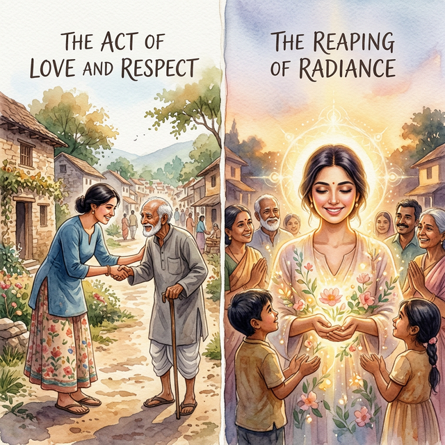
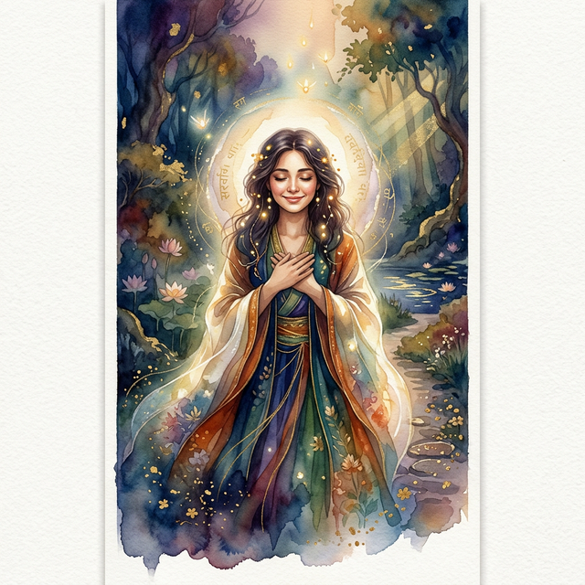
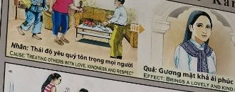

El Rostro del AmorThe Face of LoveIl volto dell'amore爱的面容وجه الحبЛицо любвиDas Gesicht der LiebeLe visage de l'amour愛の顔A Face do AmorKhuôn mặt của tình yêu
Los rostros nobles son lienzos iluminados por amabilidades pasadas. Noble faces are canvases illuminated by past kindnesses. Những khuôn mặt cao quý là những bức tranh được thắp sáng bởi lòng nhân ái trong quá khứ. Edle Gesichter sind Leinwände, die von vergangenen Freundlichkeiten erleuchtet werden. Благородные лица — это холсты, освещенные прошлыми добрыми делами. Les visages nobles sont des toiles illuminées par des actes de bonté passés. I volti nobili sono tele illuminate da passati atti di gentilezza. Rostos nobres são telas iluminadas por atos passados de bondade. 気高い顔は、過去の親切によって照らされたキャンバスです。 高贵的面孔是被过去的善举照亮的画布。 الوجوه النبيلة هي لوحات مضاءة بأعمال طيبة من الماضي.
Es una ley sutil e ineludible que nuestro fuero interno, tarde o temprano, cincela nuestro exterior. Aquel que camina por el mundo regando respeto, consideración y una sonrisa sincera, no pierde su esencia, sino que la multiplica...
Cuando ofrecemos amor incondicional a cada vida que se cruza en nuestro sendero, nuestra propia alma se ilumina desde lo invisible. Ese candor interno no se disuelve en el viento; por lo tanto, acaba aflorando a la superficie en las vidas venideras.
Así pues, el universo esculpe en la próxima encarnación un rostro hermoso, afable y sereno; un puente de belleza física y magnetismo compasivo que reflejará la pureza que el espíritu guardó para siempre.
It is a subtle and inescapable law that our inner being, sooner or later, chisels our exterior. He who walks through the world spreading respect, consideration and a sincere smile, does not lose his essence, but rather multiplies it...
When we offer unconditional love to every life that crosses our path, our own soul is illuminated from the invisible. That inner candor does not dissolve in the wind; Therefore, it ends up coming to the surface in future lives.
Thus, the universe sculpts in the next incarnation a beautiful, affable and serene face; a bridge of physical beauty and compassionate magnetism that will reflect the purity that the spirit kept forever.
È una legge sottile e ineludibile che il nostro essere interiore, prima o poi, scolpisca il nostro esterno. Chi cammina per il mondo diffondendo rispetto, considerazione e un sorriso sincero, non perde la sua essenza, anzi la moltiplica...
Quando offriamo amore incondizionato a ogni vita che incrocia il nostro cammino, la nostra anima viene illuminata dall'invisibile. Quel candore interiore non si dissolve nel vento; Pertanto, finisce per venire in superficie nelle vite future.
Così, l'universo scolpisce nella prossima incarnazione un volto bello, affabile e sereno; un ponte di bellezza fisica e magnetismo compassionevole che rifletterà la purezza che lo spirito conserverà per sempre.
我们的内在迟早会凿刻我们的外在，这是一条微妙而不可避免的法则。一个在世界上传播尊重、关怀和真诚微笑的人，不会失去他的本质，而是会倍增它……
当我们向每一个遇到我们的生命提供无条件的爱时，我们自己的灵魂就会从无形中被照亮。内心的坦诚不会随风而消散；因此，它最终会在来世浮出水面。
于是，宇宙在下一世塑造了一张美丽、和蔼、安详的面孔；一座美丽的身体和富有同情心的吸引力的桥梁，将反映精神永远保持的纯洁性。
إنه قانون دقيق لا مفر منه، وهو أن كياننا الداخلي، عاجلاً أم آجلاً، ينحت مظهرنا الخارجي. من يمشي في الدنيا ناشراً الاحترام والاحترام والابتسامة الصادقة، لا يفقد جوهره، بل يضاعفه...
عندما نقدم الحب غير المشروط لكل حياة تعبر طريقنا، فإن روحنا تنير من اللامرئي. تلك الصراحة الداخلية لا تذوب في مهب الريح. لذلك، ينتهي الأمر بالظهور على السطح في الحياة المستقبلية.
وهكذا ينحت الكون في التجسد التالي وجهًا جميلاً ولطيفًا وهادئًا. جسر من الجمال الجسدي والمغناطيسية الرحيمة التي ستعكس النقاء الذي احتفظت به الروح إلى الأبد.
Это тонкий и неизбежный закон: наше внутреннее существо рано или поздно разрушает наше внешнее. Тот, кто идет по миру, распространяя уважение, внимание и искреннюю улыбку, не теряет своей сущности, а, наоборот, приумножает ее...
Когда мы предлагаем безусловную любовь каждой жизни, которая встречается на нашем пути, наша собственная душа освещается невидимым. Эта внутренняя искренность не растворяется на ветру; Поэтому в будущих жизнях оно всплывает на поверхность.
Так Вселенная лепит в следующем воплощении красивое, приветливое и безмятежное лицо; мост физической красоты и сострадательного магнетизма, который будет отражать чистоту, которую дух сохранил навсегда.
Es ist ein subtiles und unausweichliches Gesetz, dass unser inneres Wesen früher oder später unser Äußeres prägt. Wer durch die Welt geht und Respekt, Rücksichtnahme und ein aufrichtiges Lächeln verbreitet, verliert sein Wesen nicht, sondern vervielfacht es ...
Wenn wir jedem Leben, das unseren Weg kreuzt, bedingungslose Liebe schenken, wird unsere eigene Seele vom Unsichtbaren erleuchtet. Diese innere Offenheit löst sich nicht im Wind auf; Daher kommt es in zukünftigen Leben schließlich an die Oberfläche.
So formt das Universum in der nächsten Inkarnation ein schönes, freundliches und heiteres Gesicht; eine Brücke aus körperlicher Schönheit und mitfühlender Anziehungskraft, die die Reinheit widerspiegelt, die der Geist für immer bewahrt hat.
C’est une loi subtile et incontournable que notre être intérieur cisèle tôt ou tard notre extérieur. Celui qui parcourt le monde en répandant le respect, la considération et un sourire sincère ne perd pas son essence, mais la multiplie...
Lorsque nous offrons un amour inconditionnel à chaque vie qui croise notre chemin, notre propre âme est illuminée par l’invisible. Cette franchise intérieure ne se dissout pas dans le vent ; Par conséquent, cela finit par refaire surface dans les vies futures.
Ainsi, l'univers sculpte dans la prochaine incarnation un visage beau, affable et serein ; un pont de beauté physique et de magnétisme compatissant qui reflétera la pureté que l'esprit a gardé pour toujours.
私たちの内なる存在が、遅かれ早かれ私たちの外面を彫刻するという、微妙で避けられない法則です。敬意、思いやり、心からの笑顔を振りまいて世界を歩く人は、自分の本質を失わず、むしろそれを増幅させます...
私たちの道を横切るすべての命に無条件の愛を捧げるとき、私たち自身の魂は目に見えないものから照らされます。その内なる率直さは風に溶けることはありません。したがって、それは後生に表面化することになります。
このようにして、宇宙は次の転生において、美しく、愛想が良く、穏やかな顔を彫刻します。肉体的な美しさと慈悲深い磁力の架け橋は、精神が永遠に保ち続けた純粋さを反映します。
É uma lei sutil e inevitável que nosso ser interior, mais cedo ou mais tarde, esculpa nosso exterior. Quem caminha pelo mundo espalhando respeito, consideração e sorriso sincero, não perde sua essência, mas a multiplica...
Đó là một quy luật tinh tế và không thể tránh khỏi mà con người bên trong của chúng ta sớm hay muộn sẽ đục khoét bề ngoài của chúng ta. Người đi khắp thế giới lan tỏa sự tôn trọng, sự quan tâm và nụ cười chân thành, sẽ không đánh mất bản chất của mình mà còn nhân lên gấp bội...
Quando oferecemos amor incondicional a cada vida que cruza nosso caminho, nossa própria alma é iluminada pelo invisível. Essa franqueza interior não se dissolve com o vento; Portanto, acaba vindo à tona em vidas futuras.
Khi chúng ta dành tình yêu vô điều kiện cho mọi sinh vật đi ngang qua con đường của mình, tâm hồn của chúng ta sẽ được soi sáng từ những điều vô hình. That inner candor does not dissolve in the wind; Vì vậy, cuối cùng nó sẽ nổi lên trên bề mặt trong những đời tương lai.
Assim, o universo esculpe na próxima encarnação um rosto belo, afável e sereno; uma ponte de beleza física e magnetismo compassivo que refletirá a pureza que o espírito guardou para sempre.
Như vậy, vũ trụ đã tạc nên ở kiếp sau một khuôn mặt xinh đẹp, niềm nở và thanh thản; một cây cầu có vẻ đẹp hình thể và từ tính nhân ái sẽ phản ánh sự thuần khiết mà tinh thần được gìn giữ mãi mãi.
El Espejo de las Almas
The Mirror of Souls
Lo specchio delle anime
灵魂之镜
مرآة النفوس
Зеркало душ
Der Spiegel der Seelen
Le miroir des âmes
魂の鏡
O espelho das almas
Tấm gương tâm hồn
Había en un arrabal polvoriento un anciano cuyo rostro estaba surcado por profundas arrugas; sin embargo, quienes lo miraban hallaban siempre una paz inexplicable.
Él no poseía riquezas ni estatuas a su nombre, pero trataba tanto al magnate como al mendigo con idéntico y profundo respeto. Nadie sospechaba que, en los silenciosos telares del destino, esa constancia cálida estaba tejiendo la luz de su futuro.
Ya que el universo no reparte la belleza física como un mero lance del azar, sino como un pago ineludible del afecto que en el pasado esparcimos. Quien abriga el mundo con dulzura, terminará forzando a los astros a iluminar de belleza su propia carne.
There was an old man in a dusty suburb whose face was furrowed by deep wrinkles; However, those who looked at him always found an inexplicable peace.
He had no wealth or statues to his name, but he treated both the magnate and the beggar with identical and profound respect. No one suspected that, in the silent looms of destiny, that warm constancy was weaving the light of their future.
Since the universe does not distribute physical beauty as a mere chance, but as an unavoidable payment for the affection that we spread in the past. Whoever shelters the world with sweetness will end up forcing the stars to illuminate their own flesh with beauty.
C'era un vecchio in un sobborgo polveroso il cui volto era solcato da rughe profonde; Tuttavia, chi lo guardava trovava sempre una pace inspiegabile.
Non aveva ricchezze né statue al suo nome, ma trattava sia il magnate che il mendicante con identico e profondo rispetto. Nessuno sospettava che, nei silenziosi telai del destino, quella calda costanza stesse tessendo la luce del loro futuro.
Poiché l'universo non distribuisce la bellezza fisica come una mera casualità, ma come un inevitabile pagamento dell'affetto che abbiamo diffuso nel passato. Chi protegge il mondo con dolcezza finirà per costringere le stelle a illuminare di bellezza la propria carne.
尘土飞扬的郊区有一位老人，他的脸上布满了深深的皱纹。然而，看着他的人，却总有一种莫名的平静。
他没有财富，也没有雕像，但他对权贵和乞丐都抱有同样深刻的尊重。谁也没有想到，在命运的无声织布中，那份温暖的坚守正在编织着他们未来的光芒。
因为宇宙不会把美丽的外表当作一个偶然的机会，而是对我们过去所传播的感情不可避免的付出的代价。谁用甜蜜庇护世界，谁就会迫使星星用美丽照亮自己的肉体。
كان هناك رجل عجوز في إحدى الضواحي المتربة، وكان وجهه مجعدًا بالتجاعيد العميقة؛ ومع ذلك، فإن أولئك الذين نظروا إليه وجدوا دائمًا سلامًا لا يمكن تفسيره.
لم يكن لديه ثروة أو تماثيل باسمه، لكنه كان يعامل كل من رجل الأعمال والمتسول باحترام متماثل وعميق. لم يشك أحد في أن ذلك الثبات الدافئ ينسج ضوء المستقبل في ظل أنوال القدر الصامتة.
حيث أن الكون لا يوزع الجمال الجسدي كمجرد صدفة، بل كدفعة لا مفر منها مقابل المودة التي نشرناها في الماضي. من يلبس الدنيا بالعذوبة سيجبر النجوم على أن تنير أجسادهم بالجمال.
В пыльном пригороде жил старик, лицо которого было изрыто глубокими морщинами; Однако те, кто смотрел на него, всегда находили необъяснимое спокойствие.
На его имя не было ни богатства, ни статуй, но он относился и к магнату, и к нищему с одинаковым и глубоким уважением. Никто не подозревал, что в молчаливых станках судьбы это теплое постоянство ткет свет их будущего.
Поскольку Вселенная распределяет физическую красоту не как простую случайность, а как неизбежную плату за привязанность, которую мы распространяли в прошлом. Кто укроет мир сладостью, тот заставит звезды осветить свою собственную плоть красотой.
In einem staubigen Vorort lebte ein alter Mann, dessen Gesicht von tiefen Falten zerfurcht war; Doch diejenigen, die ihn ansahen, fanden immer einen unerklärlichen Frieden.
Er hatte weder Reichtum noch Statuen, aber er behandelte sowohl den Magnaten als auch den Bettler mit dem gleichen und tiefen Respekt. Niemand ahnte, dass diese warme Beständigkeit in den stillen Webstühlen des Schicksals das Licht ihrer Zukunft webte.
Denn das Universum verteilt körperliche Schönheit nicht als bloßen Zufall, sondern als unvermeidliche Bezahlung für die Zuneigung, die wir in der Vergangenheit verbreitet haben. Wer die Welt mit Süße beschützt, wird am Ende die Sterne dazu zwingen, sein eigenes Fleisch mit Schönheit zu erleuchten.
Il y avait dans un faubourg poussiéreux un vieil homme dont le visage était sillonné de rides profondes ; Cependant, ceux qui le regardaient trouvaient toujours une paix inexplicable.
Il n'avait ni richesses ni statues à son actif, mais il traitait le magnat et le mendiant avec un respect identique et profond. Personne ne se doutait que, dans les métiers silencieux du destin, cette chaleureuse constance tissait la lumière de leur avenir.
Puisque l’univers ne distribue pas la beauté physique comme une simple chance, mais comme un paiement inévitable pour l’affection que nous avons répandue dans le passé. Celui qui abrite le monde avec douceur finira par obliger les étoiles à illuminer leur propre chair de beauté.
ほこりっぽい郊外に、顔に深いしわができた老人がいました。しかし、彼を見つめる人々はいつも説明のつかない安らぎを感じました。
彼には富も彫像もありませんでしたが、有力者と乞食の両方に同じように深い敬意を持って接しました。運命の静かな重なりの中で、その温かい恒常性が彼らの未来の光を紡いでいるとは誰も疑っていなかった。
宇宙は肉体的な美しさを単なる偶然として分配するのではなく、私たちが過去に広めた愛情に対する避けられない対価として分配するのですから。甘美さで世界を保護する者は、結局、スターたちに自分自身の肉体を美しさで照らすことを強制することになるでしょう。
Havia um velho num subúrbio empoeirado cujo rosto estava marcado por rugas profundas; Porém, quem olhava para ele sempre encontrava uma paz inexplicável.
Có một ông già ở vùng ngoại ô bụi bặm, khuôn mặt hằn những nếp nhăn sâu; Tuy nhiên, những người nhìn anh luôn tìm thấy một sự bình yên không thể giải thích được.
Ele não tinha riquezas ou estátuas em seu nome, mas tratava tanto o magnata quanto o mendigo com igual e profundo respeito. Ninguém suspeitava que, nos teares silenciosos do destino, aquela cálida constância tecia a luz do seu futuro.
Pois o universo não distribui a beleza física como um mero acaso, mas como um pagamento inevitável pelo carinho que espalhamos no passado. Quem abriga o mundo com doçura acabará obrigando as estrelas a iluminar a própria carne com beleza.
Vì vũ trụ không phân phối vẻ đẹp hình thể như một cơ hội đơn thuần mà như một sự trả giá không thể tránh khỏi cho tình cảm mà chúng ta đã lan tỏa trong quá khứ. Bất cứ ai che chở thế giới bằng sự ngọt ngào cuối cùng sẽ buộc các ngôi sao phải chiếu sáng làn da của chính mình bằng vẻ đẹp.

La Inspiración Original
The Original Inspiration
L'Ispirazione Originale
最初的灵感
الإلهام الأصلي
Оригинальное вдохновение
Die Ursprüngliche Inspiration
L'Inspiration Originale
元のインスピレーション
A Inspiração Original
Nguồn cảm hứng ban đầu
La historia que hemos relatado en este capítulo está inspirada por el pasaje de la escena original de los murales «Tranh Nhân Quả» (Ilustraciones del Karma) del Templo Linh Ung en Da Nang, capturado en la imagen.
La storia che abbiamo raccontato in questo capitolo è ispirata al passaggio della scena originale dei murali “Tranh Nhân Quả” (Illustrazioni del Karma) del Tempio Linh Ung a Da Nang, catturati nell'immagine.
我们在本章中讲述的故事的灵感来自图像中捕获的岘港灵应寺“Tranh Nhân Quả”（业力插图）壁画的原始场景。
القصة التي رويناها في هذا الفصل مستوحاة من مقطع من المشهد الأصلي لجداريات "ترانه نهان كو" (الرسوم التوضيحية للكارما) لمعبد لينه أونغ في دا نانغ، الملتقطة في الصورة.
История, которую мы рассказали в этой главе, вдохновлена отрывком из оригинальной сцены фрески «Тран Нхан Ку» («Иллюстрации кармы») храма Линь Унг в Дананге, запечатленной на изображении.
Die Geschichte, die wir in diesem Kapitel erzählt haben, ist inspiriert von der Passage aus der Originalszene der Wandgemälde „Tranh Nhân Quả“ (Illustrationen von Karma) des Linh Ung-Tempels in Da Nang, die im Bild festgehalten ist.
L'histoire que nous avons racontée dans ce chapitre est inspirée du passage de la scène originale des peintures murales « Tranh Nhân Quả » (Illustrations du Karma) du temple Linh Ung à Da Nang, capturées dans l'image.
この章で私たちが語った物語は、ダナンのリンウン寺院の壁画「Tranh Nhân Quả」（カルマの図）の元のシーンの一節からインスピレーションを得て、画像に収められています。
A história que contamos neste capítulo é inspirada na passagem da cena original dos murais “Tranh Nhân Quả” (Ilustrações do Karma) do Templo Linh Ung em Da Nang, capturada na imagem.
Câu chuyện chúng tôi kể trong chương này được lấy cảm hứng từ đoạn trích từ cảnh gốc của bức tranh tường “Tranh Nhân Quả” ở chùa Linh Ứng ở Đà Nẵng, được ghi lại trong hình ảnh.
The story we have related in this chapter is inspired by the passage from the original scene of the "Tranh Nhân Quả" (Karma Illustrations) murals at the Linh Ung Temple in Da Nang, captured in the image.

Como se puede apreciar en el pasaje extraído del mural, la causa y su efecto kármico están descritos originalmente en vietnamita y con una breve traducción al inglés. A continuación, te ofrecemos su traducción detallada en los distintos idiomas:
As can be seen in the passage extracted from the mural, the cause and its karmic effect are originally described in Vietnamese with a brief English translation. Below, we offer the detailed translation in different languages:
Come si può vedere nel passaggio estratto dal murale, la causa e il suo effetto karmico sono originariamente descritti in vietnamita con una breve traduzione in inglese. Di seguito offriamo la traduzione dettagliata in diverse lingue:
As can be seen in the passage taken from the mural, the cause and its karmic effect are originally described in Vietnamese and with a brief translation into English.下面，我们为您提供不同语言的详细翻译：
وكما يتبين من المقطع المأخوذ من اللوحة الجدارية، فإن السبب وتأثيره الكارمي موصوفان في الأصل باللغة الفيتنامية مع ترجمة مختصرة إلى الإنجليزية. ونقدم لكم أدناه ترجمتها التفصيلية باللغات المختلفة:
Как видно из отрывка, взятого из фрески, причина и ее кармическое следствие изначально описаны на вьетнамском языке и с кратким переводом на английский язык. Ниже мы предлагаем вам его подробный перевод на разные языки:
Wie aus der Passage aus dem Wandgemälde hervorgeht, werden die Ursache und ihre karmische Wirkung ursprünglich auf Vietnamesisch und mit einer kurzen Übersetzung ins Englische beschrieben. Nachfolgend bieten wir Ihnen die ausführliche Übersetzung in die verschiedenen Sprachen an:
Comme on peut le voir dans le passage tiré de la peinture murale, la cause et son effet karmique sont initialement décrits en vietnamien et avec une brève traduction en anglais. Ci-dessous, nous vous proposons sa traduction détaillée dans les différentes langues :
壁画の一節からわかるように、原因とそのカルマ的影響はもともとベトナム語で説明されており、英語への簡単な翻訳が付けられています。以下に、さまざまな言語での詳細な翻訳を提供します。
Como pode ser visto no trecho retirado do mural, a causa e seu efeito cármico são originalmente descritos em vietnamita e com uma breve tradução para o inglês. Abaixo, oferecemos sua tradução detalhada nos diferentes idiomas:
Như có thể thấy trong đoạn trích từ bức tranh tường, nguyên nhân và nghiệp quả của nó ban đầu được mô tả bằng tiếng Việt và có bản dịch ngắn gọn sang tiếng Anh. Dưới đây, chúng tôi cung cấp cho bạn bản dịch chi tiết sang các ngôn ngữ khác nhau:
🇻🇳 Tiếng Việt:
Nhân: Thái độ yêu quý tôn trọng mọi người.
Quả: Gương mặt khả ái phúc hậu.
🇬🇧 English Translation:
Cause: Treating others with love, kindness and respect.
Effect: Brings a lovely and kind face.
Traducción Recreada:
Causa: Tratar a los demás con amor, amabilidad y respeto.
Efecto: Atrae un rostro hermoso, amable y bondadoso.
Recreated Translation:
Cause: Treat others with love, kindness and respect.
Effect: Attracts a beautiful, kind and kind face.
Traduzione ricreata:
Causa: tratta gli altri con amore, gentilezza e rispetto.
Effetto: attira un viso bello, gentile e gentile.
重新翻译：
原因：以爱、仁慈和尊重对待他人。
效果：吸引美丽、善良和友善的面孔。
الترجمة المعاد إنشاؤها:
السبب: تعامل مع الآخرين بالحب واللطف والاحترام.
التأثير: يجذب وجهًا جميلاً ولطيفًا ولطيفًا.
Воссозданный перевод:
Причина: Относиться к другим с любовью, добротой и уважением.
Эффект: Привлекает красивое, доброе и доброе лицо.
Nachgebildete Übersetzung:
Ursache: Behandle andere mit Liebe, Freundlichkeit und Respekt.
Wirkung: Zieht ein schönes, freundliches und freundliches Gesicht an.
Traduction recréée :
Cause : Traitez les autres avec amour, gentillesse et respect.
Effet : Attire un visage beau, gentil et gentil.
再作成された翻訳：
原因：愛、優しさ、敬意を持って他人に接します。
効果：美しく、親切で優しい顔を引き付けます。
Tradução recriada:
Causa: Trate os outros com amor, gentileza e respeito.
Efeito: Atrai um rosto bonito, gentil e gentil.
Bản dịch được tạo lại:
Nguyên nhân: Đối xử với người khác bằng tình yêu thương, lòng nhân ái và sự tôn trọng.
Hệ quả: Thu hút một khuôn mặt xinh đẹp, hiền lành và nhân hậu.
Análisis: Es una ley sutil que el interior cincela el exterior. Cuando regamos el mundo con aprecio, consideración y una sonrisa sincera hacia cada vida que cruzamos, nuestra propia alma se ilumina. Ese candor interno acaba aflorando a la superficie, esculpiendo en la próxima encarnación un rostro hermoso y sereno que refleja la pureza del espíritu para siempre.
Analysis: It is a subtle law that the interior chisels the exterior. When we water the world with appreciation, consideration, and a sincere smile toward every life we pass through, our own soul is illuminated. That inner candor ends up coming to the surface, sculpting in the next incarnation a beautiful and serene face that reflects the purity of the spirit forever.
Analisi: È una legge sottile che l'interno scalpella l'esterno. Quando innaffiamo il mondo con apprezzamento, considerazione e un sorriso sincero verso ogni vita che attraversiamo, la nostra anima è illuminata. Quel candore interiore finisce per venire a galla, scolpendo nell'incarnazione successiva un volto bello e sereno che riflette per sempre la purezza dello spirito.
分析：内凿外在是一个微妙的规律。当我们用欣赏、体贴和真诚的微笑对待我们所经历的每一个生命来浇灌这个世界时，我们自己的灵魂就会被照亮。那种内在的坦诚最终会浮现出来，在下一个转世中雕刻出一张美丽而宁静的脸，永远反映着精神的纯洁。
التحليل: إنه قانون دقيق أن ينحت الجزء الداخلي الجزء الخارجي. عندما نسقي العالم التقدير والاعتبار والابتسامة الصادقة تجاه كل حياة نمر بها، تنير روحنا. تنتهي هذه الصراحة الداخلية بالظهور على السطح، وتنحت في التجسد التالي وجهًا جميلاً وهادئًا يعكس نقاء الروح إلى الأبد.
Анализ Это тонкий закон: внутреннее высекает внешнее. Когда мы наполняем мир признательностью, вниманием и искренней улыбкой по отношению к каждой жизни, через которую мы проходим, наша собственная душа освещается. Эта внутренняя искренность в конечном итоге выходит на поверхность, создавая в следующем воплощении красивое и безмятежное лицо, навсегда отражающее чистоту духа.
Analyse: Es ist ein subtiles Gesetz, dass das Innere das Äußere meißelt. Wenn wir die Welt mit Wertschätzung, Rücksichtnahme und einem aufrichtigen Lächeln gegenüber jedem Leben, das wir durchleben, begießen, wird unsere eigene Seele erleuchtet. Diese innere Offenheit kommt schließlich an die Oberfläche und formt in der nächsten Inkarnation ein schönes und gelassenes Gesicht, das für immer die Reinheit des Geistes widerspiegelt.
Analyse : C'est une loi subtile que l'intérieur cisèle l'extérieur. Lorsque nous arrosons le monde avec appréciation, considération et un sourire sincère envers chaque vie que nous traversons, notre propre âme est illuminée. Cette candeur intérieure finit par remonter à la surface, sculptant dans la prochaine incarnation un visage beau et serein qui reflète pour toujours la pureté de l'esprit.
分析: 内部が外部を彫刻するという微妙な法則です。私たちが通過するすべての人生に対して感謝、思いやり、そして心からの笑顔で世界に水を与えるとき、私たち自身の魂は照らされます。その内なる率直さは最終的に表面に現れ、次の転生では精神の純粋さを永遠に反映する美しく穏やかな顔を彫刻します。
Análise: É uma lei sutil que o interior cinzela o exterior. Quando regamos o mundo com apreço, consideração e um sorriso sincero para cada vida pela qual passamos, nossa própria alma se ilumina. Essa candura interior acaba vindo à tona, esculpindo na próxima encarnação um rosto lindo e sereno que reflete para sempre a pureza do espírito.
Phân tích: Đó là một quy luật tinh tế rằng nội thất tạo nên ngoại thất. Khi chúng ta tưới tắm thế giới bằng sự trân trọng, quan tâm và nụ cười chân thành đối với mọi cuộc đời mà chúng ta trải qua, tâm hồn của chính chúng ta sẽ được soi sáng. Sự bộc trực bên trong đó cuối cùng lộ ra ngoài, tạo nên ở kiếp sau một khuôn mặt xinh đẹp và thanh thản, phản ánh sự thuần khiết của tinh thần mãi mãi.
Si quieres conocer más sobre el proyecto o colaborar, accede a nuestro Linktree.
If you want to know more about the project or collaborate, access our Linktree.
Se vuoi saperne di più sul progetto o collaborare, accedi al nostro Linktree.
如果您想了解有关该项目或合作的更多信息，请访问我们的 Linktree.
إذا كنت تريد معرفة المزيد عن المشروع أو التعاون، قم بالوصول إلى موقعنا Linktree.
Если вы хотите узнать больше о проекте или сотрудничать, посетите наш Linktree.
Wenn Sie mehr über das Projekt erfahren oder zusammenarbeiten möchten, greifen Sie auf unsere zu Linktree.
Si vous souhaitez en savoir plus sur le projet ou collaborer, accédez à notre Linktree.
プロジェクトについて詳しく知りたい場合、またはコラボレーションしたい場合は、こちらにアクセスしてください。 Linktree.
Se quiser saber mais sobre o projeto ou colaborar, acesse nosso Linktree.
Nếu bạn muốn tìm hiểu thêm về dự án hoặc cộng tác, hãy truy cập Linktree của chúng tôi.